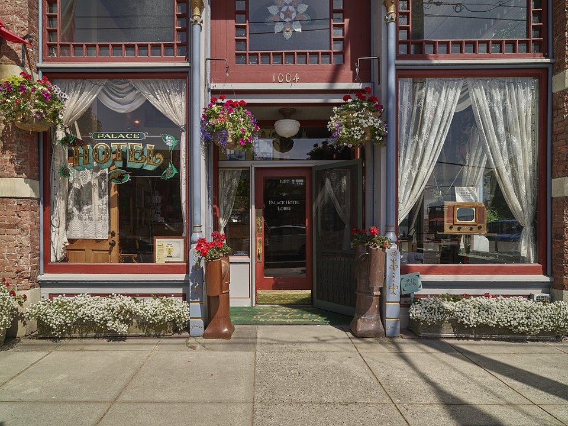

Downtown · Historic hotel
Palace Hotel
An 1889 hotel on Water Street.
Official details for Palace HotelA Victorian seaport with pie at the airport.
Port Townsend is a perfectly preserved Victorian seaport at the tip of the Olympic Peninsula, with brick storefronts on the water, mansions on the bluff and a working wooden-boat harbor. Pilots love its airport, where the Spruce Goose Cafe serves pie by the runway and the Port Townsend Aero Museum restores vintage aircraft. Stay at the Palace Hotel downtown, walk the waterfront, explore Fort Worden’s old batteries, and in September see the Wooden Boat Festival.

Time illustration: direct distance at 150 KTAS plus 15 minutes for departure and arrival, matching the discovery page. Use ForeFlight for your actual flight plan.
0S9, Jefferson County International, is a non-towered county airport at 110 feet with a 3,000-foot runway, about 10 minutes from downtown.
Jefferson County International Airport, Port Townsend, WA
A 3,000-foot runway with deer near the field; noise-abatement procedures are in effect (call the airport manager). 100LL only. No live fuel price is shown.
Pacific Northwest weather: low ceilings, drizzle and mountain obscuration much of the year from October to May; clear, dry summers with morning marine stratus on the coast; icing in winter clouds; and the Cascades between the coast and the interior. About 2140 nm from Myrtle Beach: two long days each way with several fuel stops. Plan a week, or overnight on the way out and back.
Rates and availability need travel dates.
An 1889 hotel on Water Street.
Official details for Palace HotelAn 1892 brick mansion turned hotel on the hill above town.
Official details for Manresa CastleA historic hotel and restaurant on the waterfront.
Official details for The BelmontA bed-and-breakfast a short walk from downtown.
Official details for Ravenscroft InnVictorian B&Bs and inns.
Enjoy Port Townsend for More places to stayReserve weekend dinners.
Pie and comfort food beside the runway.
Official details for Spruce Goose CafeFood and local beer on a deck over the water, up 33 steps from Water Street.
Official details for Sirens PubA casual local favorite for tacos.
Official details for Green Crow TacosSeafood, bakeries and cafés downtown.
Enjoy Port Townsend for Port Townsend dining guideA ferry from downtown crosses to Whidbey Island.
This prototype links to the local visitor site. It does not yet match events to your travel dates.
Hundreds of classic wooden boats.
Wooden Boat Festival for Wooden Boat FestivalSunny days on the water.
Enjoy Port Townsend for Dry seasonVintage aircraft on the field.
Port Townsend Aero Museum for Aero MuseumCheck the local calendar when choosing a weekend, and confirm dates and tickets with the organizer.
A sample Port Townsend weekend. This is a two-day flight each way; plan a week. No bookings or availability confirmed.
Land at 0S9 mid-morning.
Lunch in town.
A short walk, then back to the airport.
Land at 0S9, subject to weather, density altitude and your actual flight plan.
Pie at the Spruce Goose Cafe and the Aero Museum.
Dinner downtown.
Fort Worden.
The waterfront and Victorian uptown.
Seafood in town.
Hurricane Ridge if the weather is clear.
Compute takeoff performance and allow time at the FBO.
Marine stratus can linger; check ceilings before you go.
The main sight.
Explore.
Dinner in town.
These details make the difference between an appealing list and a usable getaway.
Lodging, especially for the Wooden Boat Festival.
About 2,140 nm from Myrtle Beach: two long days each way.
3,000 feet with deer nearby.
June to September.
Picks and links reviewed by WingAway Weekends. Hours, prices, menus and availability change often, so confirm directly with each place before booking. Spotted something out of date, or have a favorite we missed? Email us at hello@wingawayweekends.com.
WingAway Weekends helps you discover the destination. Use ForeFlight and current official aviation information for route, performance, weather, NOTAMs and preflight decisions. Flight planning and PIC responsibility stay with the pilot.
One fly-in weekend, a Fly to Lunch pick and the newest guides, about once a month.
Free. Unsubscribe anytime.